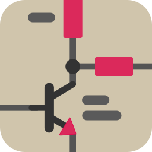

×
Schematic
docs
erc
basic_pdf_sch
BoM
_JLCPCB_bom
generic_bom_html
basic_ibom
PCB
docs
drc
basic_pcb_print
fabrication
gerber
_JLCPCB_gerbers
_JLCPCB_compress
_PCBWay_gerbers
_PCBWay_compress
drill
_JLCPCB_drill
_JLCPCB_compress
_PCBWay_drill
_PCBWay_compress
assembly
_JLCPCB_position
basic_boardview
basic_ibom
repair
basic_boardview
☰
Granit — Offsite Backup Device

Schematic
PCB
Generated by
KiBot
v1.8.6